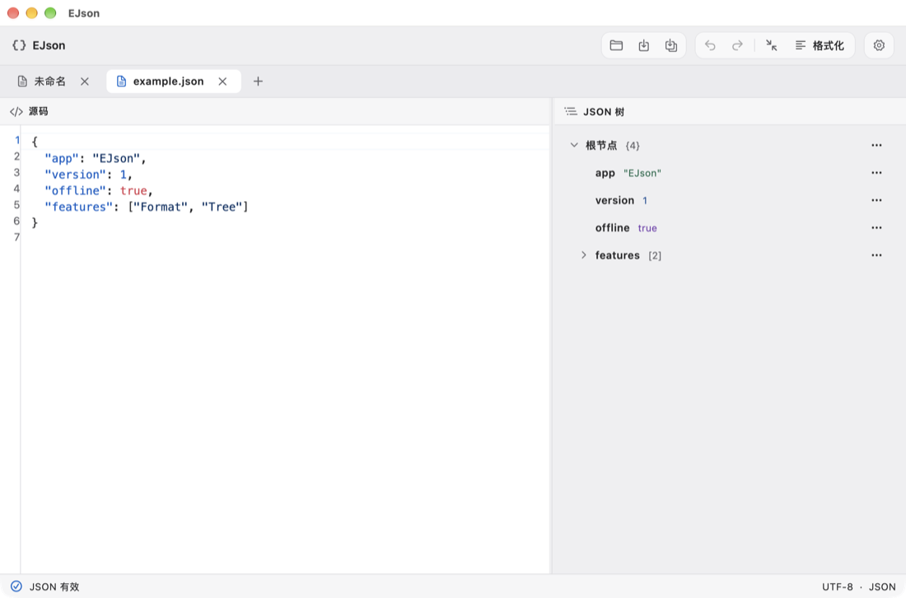

Source and tree, in sync
Select a node to jump to source. Rename keys, replace values, or extract a subtree into a new tab. Both views share undo and redo.
Edit source and tree side by side. Find and replace, query JSONPath, explore array tables, and choose your font and size. Drop files to start. All editing and parsing happen on your device.
macOS Windows Linux

Select a node to jump to source. Rename keys, replace values, or extract a subtree into a new tab. Both views share undo and redo.
Preserve duplicate keys, number literals, and string escapes when formatting or minifying. Choose indentation and line endings, and jump to syntax errors.
Search source text, keys, or values with regular expressions and capture-group replacements. Escape content into a JSON string or unescape it into its original content.
Navigate by path, use wildcards and scalar filters, and save favorite queries. Extract results into a new tab for further editing.
View arrays as tables, filter and sort rows, copy cells, and export CSV. Move or duplicate array items and sort them by value or field.
Compare two documents and inspect byte count, node count, maximum depth, and longest array to understand your JSON structure.
Drop multiple files to open them and switch to an existing tab when reopening a file. Search your 20 most recently opened or saved files and restore your workspace at startup.
Search commands with English or Chinese keywords, select with arrow keys, and run with Enter. Open with Cmd+Shift+P on macOS or Ctrl+Shift+P on Windows and Linux. Use Cmd/Ctrl+P for recent files.
Choose a local font, size, and line spacing with live preview. Set light or dark mode, syntax highlighting, and tree styles, with English and Simplified Chinese interfaces.
Find platform builds and release notes on GitHub Releases.
Apple silicon / Intel DMG
Choose arm64 for Apple silicon or x86_64 for Intel. Open the DMG and drag EJson into Applications. A universal ZIP is also available.
brew tap echo-braveshine/ejson https://github.com/Echo-BraveShine/EJson.git
brew install --cask echo-braveshine/ejson/ejsonx64 Setup.exe / MSI
Use Setup.exe for a per-user install or MSI for a machine-wide install. A portable ZIP is also available.
The release page also provides a local WinGet manifest.
x86_64 / ARM64 AppImage
Make it executable and open it without administrator permissions. Requires glibc 2.39+, GTK 3, and OpenGL.
DEB packages are available for Ubuntu 24.04+ and Debian 13+, and RPM packages for Fedora and compatible systems.